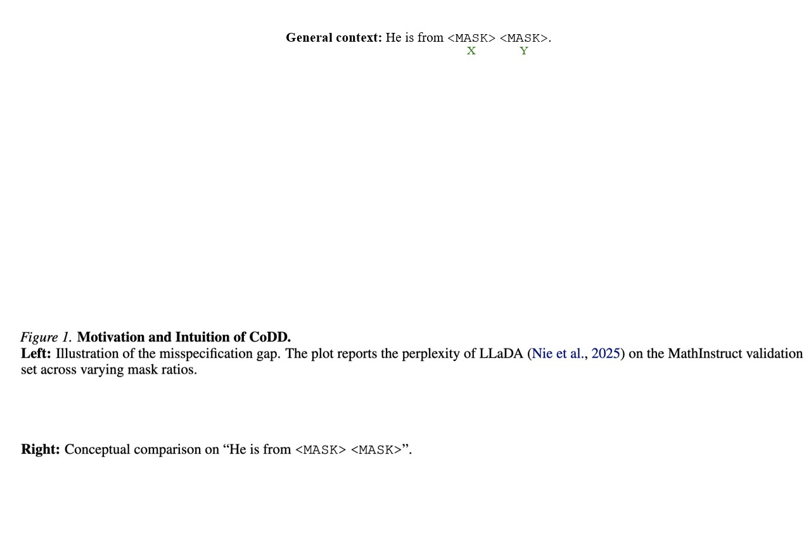
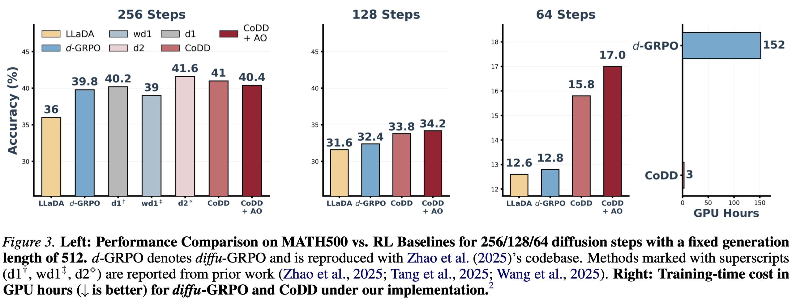
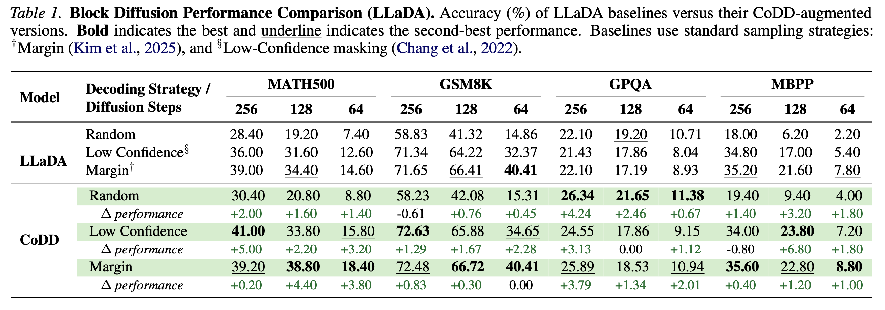
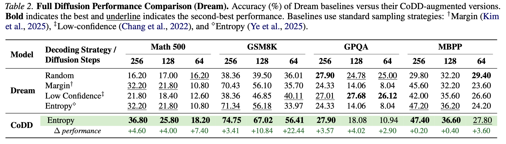
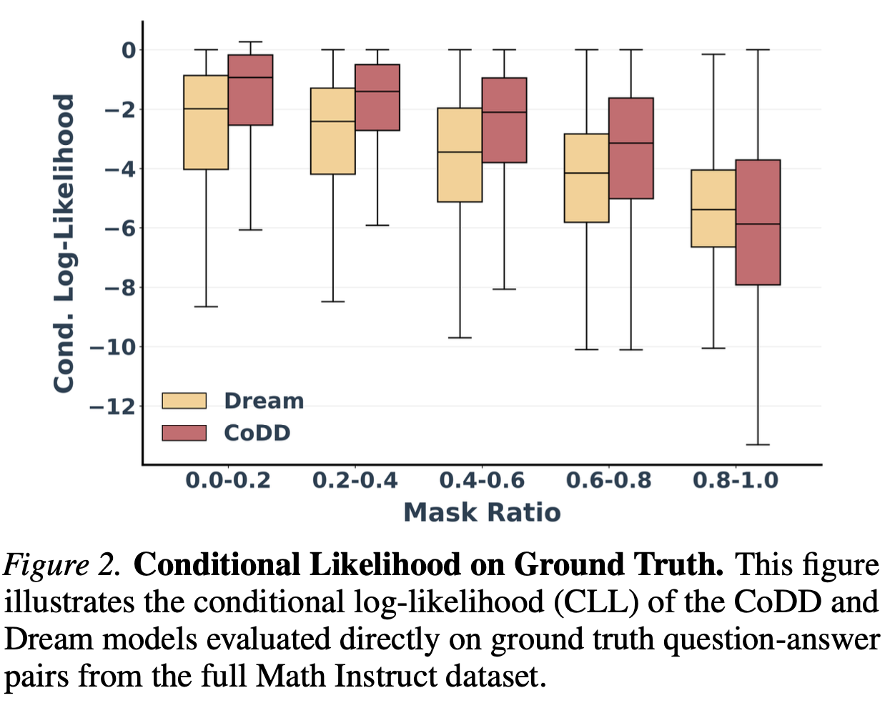

Diffusion language models theoretically allow for efficient parallel generation but are practically hindered by the "factorization barrier": the assumption that simultaneously predicted tokens are independent. This limitation forces a trade-off: models must either sacrifice speed by resolving dependencies sequentially or suffer from incoherence due to factorization. We argue that this barrier arises not from limited backbone expressivity, but from a structural misspecification: models are restricted to fully factorized outputs because explicitly parameterizing a joint distribution would require the Transformer to output a prohibitively large number of parameters.
We propose Coupled Discrete Diffusion (CoDD), a hybrid framework that breaks this barrier by replacing the fully-factorized output distribution with a lightweight, tractable probabilistic inference layer. This formulation yields a distribution family that is significantly more expressive than standard factorized priors, enabling the modeling of complex joint dependencies, yet remains compact enough to avoid the prohibitive parameter explosion associated with full joint modeling.
Empirically, CoDD seamlessly enhances diverse diffusion language model architectures with negligible overhead, matching the reasoning performance of computationally intensive Reinforcement Learning baselines at a fraction of the training cost. Furthermore, it prevents performance collapse in few-step generation, enabling high-quality outputs at significantly reduced latencies.


CoDD matches or exceeds the reasoning performance of computationally intensive RL baselines at a fraction of the training cost across varying step budgets (MATH500, LLaDA).
CoDD seamlessly enhances diverse diffusion architectures and decoding heuristics. The tables below show accuracy (%) of LLaDA and Dream baselines versus their CoDD-augmented versions across four benchmarks (MATH500, GSM8K, GPQA, MBPP) and three step budgets (256, 128, 64). CoDD consistently improves performance across all settings, with especially large gains under reduced step budgets.



Conditional log-likelihood of CoDD vs. Dream across different mask ratios. CoDD consistently assigns higher probability to ground truth tokens in the low-noise regime.
@article{li2026breaking,
title = "Breaking the Factorization Barrier in Diffusion Language Models",
author = "Li, Ian and Shao, Zilei and Wang, Benjie and
Yu, Rose and Van den Broeck, Guy and Liu, Anji",
year = "2026",
url = "https://github.com/liuanji/CoDD"
}